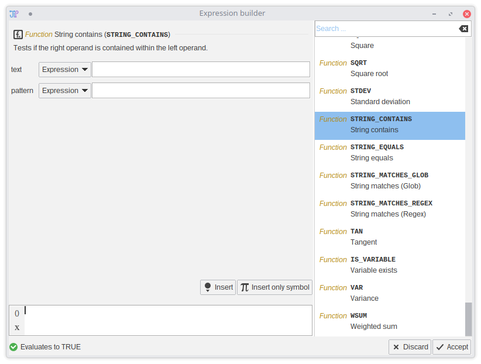

Expression parameters
When using nodes that filter or generate data, you might encounter a parameter type called “Expression”. This parameter allows to to write simple to complex functions that can test for one or multiple conditions or act as input for a generator node. The basic concept of this expression language is to mix string, boolean, and numeric operations into one simple but powerful language. It allows you for example to first calculate a numeric metric and use it for filtering objects within one line.
There are always four components you will interact with:
- Literals like numbers (
0.5), strings ("hello world"), and boolean values (TRUE,FALSE) - Variables that are supplied from the node itself like
x,y, orArea - Functions that process literals or variables like
MIN(x, 5),STRING_EQUALS("abc", "abc"). Parameters are separated by commas. - Operators that do something with the literals, variables, or function results, like subtraction, concatentation, or conditions
The expression language is interpreted as one line and you cannot write own variables. The result of the one expression is supplied to the node for processing.
The user interface of the expression parameter allows you to type the expression via a text field. You can also create new lines if you have longer expressions. They will be all merged automatically.
If you are unfamiliar with the expression language, you can click the  button to open a tool that lists all available functions and operators. This tool will help you to build expressions and check the syntax.
button to open a tool that lists all available functions and operators. This tool will help you to build expressions and check the syntax.

To get familiar with expression, use JIPipe’s integrated calculator tool (Tools > Development > Calculator). You can play around with any expression you like without breaking something.
Variables
Variables are set externally by the node and can contain various useful values. For example, filter nodes will put numbers into the variables. Image generator nodes might put the pixel coordinates into them.
Example
Here the node supplies the variables x and y and expects a number back. You can input a formula that will be
automatically applied to ally x and y values:
(x + y) + x/y + 1
The expression builder shows a list of all variables. This list might be incomplete if variables are generated during the runtime (e.g., extracted from a table).
Operators
The expressions understand a wide range of common operators for numeric, string, and boolean data:
- You can add, subtract, divide, … numbers
- Strings can be concatenated or checked for if one string contains another
- All basic boolean operators are available
Example
You can combine various operators to do complex filtering. Here the node supplies variables Area and MaxWidth:
(Area > 1000) AND ((MaxWidth^2 / Area > 0.5))
Functions
The expression language comes with a large library of predefined functions that you can use for more complex tasks:
Example
To find files, it can be useful to utilize a Glob-filter that can reliably test for the file extension. Here name is the file name and supplied by the node.
STRING_MATCHES_GLOB(name, "*.tif") AND ("data" IN name)
Data types
The expression language supports five basic data types: Numbers, strings, arrays, and maps
Numbers
Numbers are any kind of number (integer or floating point). Number literals are read as floating point numbers (double).
Example: 1, 0.5
Strings
Strings are character sequences (texts). They are defined by putting double quotes around a text. If you want to have a double quote inside your string, escape it via \. If you want a \ in your text, escape it with another \.
Example: "hello world", "this text has a \" quote and \\ backslash"
Arrays
Arrays are collections of values. They are defined via the ARRAY(...) function. Individual items are access via the @ operator and a numeric index starting from zero.
Example: ARRAY(1,2,3,4) @ 2 will return 3.
Example: ARRAY(1,2,3,4) @ ARRAY(0,1) will return an array with 1 and 2
Maps
Maps are collections of values where each value is given a unique name. They are defined via the MAP(...) function that should be provided with 2-item arrays (there is a PAIR(key, value) function for this). You can get an array of all keys via the KEYS() function and can access elements via the @ operator.
Example: MAP(PAIR("a", 1), PAIR("b", 2), PAIR("c", 3)) @ "b" returns 2
Example: KEYS(MAP(PAIR("a", 1), PAIR("b", 2), PAIR("c", 3))) returns an array with a, b, and c
Example: VALUES(MAP(PAIR("a", 1), PAIR("b", 2), PAIR("c", 3))) returns an array with 1, 2, and 3
Operators
There are many operators with alternative ways to write them available. There are two kinds of operators:
- Symbolic operators are using symbols like
$,&or* - Textual operators are written words like
ANDorCONTAINS
The difference between the operators is that symbolic operators can be written without spaces. For example you can write 5+5 or !x.
Textual operators require spaces to be separated. For example you cannot write NOTx. You have to write NOT x.
| Operator | Description | Usage |
|---|---|---|
| Logical AND | Returns TRUE if both operands are TRUE | x AND y or x & y |
| Logical OR | Returns TRUE if one of the operands is TRUE | x OR y or `x |
| Logical XOR | Returns TRUE if exactly one operand is TRUE | x XOR y |
| Logical NOT | Returns TRUE if input is FALSE and vice versa | NOT x or ! x |
| Numeric division | Divides the left by the right operand | x / y |
| Numeric exponent | Calculates left to the power of the right operand | x ^ y |
| Numeric subtraction / Array removal | Subtracts right from left (Numbers). If the operands are arrays, the right items are removed from the left array | x - y |
| Numeric multiplication | Multiplies the two operands | x * y |
| Numeric addition / String concatenation / Array concatentation | Adds two numbers. Concatenates if the operands are strings. Merges two arrays | x + y |
| Numeric greater than | Returns TRUE if the left operand is greater than the right one | x > y |
| Numeric greater or equal | Returns TRUE if the left operand is greater or equal to the right | x >= y |
| Numeric less than | Returns TRUE if the left operand is less than the right one | x < y |
| Numeric less or equal | Returns TRUE if the left operand is less or equal to the right one | x <= y |
| Numeric / String / Boolean equality | Returns TRUE if the operands are equal | x == y or x EQUALS y |
| Numeric / String / Boolean inequality | Returns TRUE if the operands are unequal | x != y or x UNEQUAL y |
| Numeric negation | This is technically an operator | -x |
| Numeric modulo | Calculates the modulo | x % y |
| Contains | Returns TRUE if the one string is contained in the other one (both operands are strings), or if an array contains an item, or a map contains a values | x IN y or y CONTAINS x |
| Variable exists | Returns TRUE if the a variable with the name exists | x EXISTS |
| Resolve variable | Returns the value of the variable with name. Useful for variables that have spaces in their names or special characters. | $ x (Alternative function: GET_VARIABLE(x)) |
| Get item in array/map | Returns the array item(s) or string characters of the left operands. The right-hand side can be a number (the index starting from 0) or an array of indices. If the left operand is a map, the indices are whatever the map uses as index | x @ y or x AT y |
Precedence
The operators are ordered according to a precedence table. You might need to use brackets (()) to force the order you expect:
The higher the number is the more the operator is preferred.
| 1 | 2 | 3 | 4 | 5 | 6 | 7 | 8 | 9 | 10 |
|---|---|---|---|---|---|---|---|---|---|
| OR | AND | NOT | |||||||
| XOR | |||||||||
| Subtraction (x - y) | Divide (x / y) | Power (x^y) | Negate (-x) | ||||||
| Modulo (x % y) | |||||||||
| Multiply (x * y) | |||||||||
| Greater than or equal (x >= y) | |||||||||
| Greater than (x > y) | |||||||||
| Less than or equal (x <= y) | |||||||||
| Less than (x < y) | |||||||||
| Equal (x == y) | |||||||||
| Unequal (x != y) | |||||||||
| String contains (x IN y) | |||||||||
| Addition (x + y) | |||||||||
| String contains (x CONTAINS y) | |||||||||
| Variable exists (x EXISTS) | |||||||||
| Array/Map access (x @ y) | Variable resolve ($ x) |
Compatible types
Not all operators are compatible to all types. See following table for the operator’s behavior:
| Operator | Number | Boolean | String | Array | Map |
|---|---|---|---|---|---|
| AND | Error | OK | Error | Error | Error |
| NOT | Error | OK | Error | Error | Error |
| OR | Error | OK | Error | Error | Error |
| XOR | Error | OK | Error | Error | Error |
| Divide (x / y) | OK | OK (TRUE=1, FALSE=0) | Works (If can be converted to number) | Error | Error |
| Multiply (x * y) | OK | OK (TRUE=1, FALSE=0) | Works (If can be converted to number) | Error | Error |
| Modulo (x % y) | OK | OK (TRUE=1, FALSE=0) | Works (If can be converted to number) | Error | Error |
| Subtract (x - y) | OK | OK (TRUE=1, FALSE=0) | Works (If can be converted to number) | OK (both operands are arrays) | OK (left operand is map, right operand is array or map) |
| Addition (x + y) | OK | OK (TRUE=1, FALSE=0) | OK (Conversion to strings, string concatenation) | OK (both operands are arrays) | OK (both operands are maps) |
| Equality (x == y) | OK | OK | OK (If types differ, conversion to strings) | OK | OK |
| Inequality (x != y) | OK | OK | OK | OK | OK |
| Contains (x IN y / x CONTAINS y) | Error | Error | OK | OK | OK |
| Less than (x < y) | OK | OK (TRUE=1, FALSE=0) | Error | Error | Error |
| Less than or equal (x <= y) | OK | OK (TRUE=1, FALSE=0) | Error | Error | Error |
| Greater than (x > y) | OK | OK (TRUE=1, FALSE=0) | Error | Error | Error |
| Greater than or equal (x >= y) | OK | OK (TRUE=1, FALSE=0) | Error | Error | Error |
| Variable exists (x EXISTS) | Works (Converted to string) | Works (Converted to string) | OK | Error | Error |
| Variable resolve ($ x) | Works (Converted to string) | Works (Converted to string) | OK | Error | Error |
| Get item in array or map (x @ y) | Error | Error | Error | OK | OK |